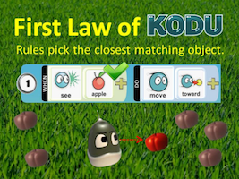
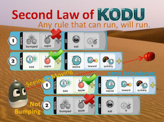
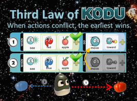
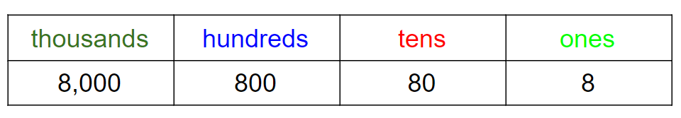

What You Should Know - Kodu: Game Stats
 Important Vocabulary
Important Vocabulary
- Place Value - the numeric value of a digit
- Estimation - a probable guess of a value
- Code - instructions for the computer
- Command - tells the computer what to do
- Rounding - replacing a number with an approximate value
Writing a Computer Program
When you make a computer game, you are actually writing a computer program. Your program tells the computer how your game is played using instructions called code. In some computer languages, you write code by typing. In Kodu, writing code is as easy as clicking your mouse.
Each line in this picture is a line of code. Each line acts as a rule or command that tells your computer how your game is played. A rule is a line of When & Do commands. (When ____ happens, the object should do ____.)
First Game Tutorial
Kodu tutorials are hosted for free on the Kodu Game Lab Community website and can be watched at any time.
Learn how to create your first game in the following video by:
- Finding and loading worlds
- Adding objects to a world
- Programming When/Do rules
- Saving your work
Key programming/Kodu concepts:
- Object – Objects are anything you put in your world, like a person, place, or thing.
- When – This is the event that makes something happen.
- Do – This is the behavior or reaction to the event.
Direct Link: Kodu First Game Tutorial
Debugging Your Program
Computers only do what you tell them to do. When creating a new program, it is easy to miss a step or have something in the wrong order. When this happens (and it will), you need to debug your program. Review these laws of Kodu before you get started:
Direct Link: Kodu Avoiding Pitfalls
  
Place Value
Place value tells you what each digit in a number represents. Knowing what number a digit represents lets you know if the number is in the ones, tens, hundreds, and thousands position. Take a look at this place value chart.

If we wanted to know the value of the underlined number in 4,587, we would use the place value. The digit 5 in this number is in the hundreds place. This means that the value of the 5 in the number 4,587 is 500.
Rounding
Place value comes in handy when you are estimating and rounding numbers. Rounding means to replace a number with an approximate value. This value is a shorter or simpler representation.
When you are rounding, you can round to any digit. For example, you can round to the ones, tens, hundreds, or thousands place value.
For example, let’s look at the number 8. If we round to the tens place, we need to find the nearest 10. We know that 8 is closest to 10.

Now let’s take a look at the number 63. Again, we want to find the nearest 10. If we look at the number line, 63 is closer to 60 than 70. So, we can round 63 to 60.

Let’s try rounding to the nearest hundred. Take a look at the number 889. We want to round this number to the nearest 100. That means we are looking at numbers between 800 and 900. You can see on the number line that 889 is closest to 900.
You can also look at the number in the tens place to help you decide. In 889, there are 8 tens. We know that 8 is closer to 10. This will help us round the number to the nearest hundred.

Career Connection and Real-World Application
Rounding in Careers
Many people use rounding and place value in their daily lives. You might use rounding when you are shopping for groceries or planning to go to a movie. Because the prices shown at a store usually have dollars and cents, you might round to the nearest dollar to know if you have enough money. At a theater, you might round to the nearest dollar to know if you can buy popcorn, a drink, and candy.
Another profession that uses rounding is the farming industry. A farmer could round numbers to the nearest acre of land when planning fields and gardens. They even use rounding when discussing the number of seeds they plant.